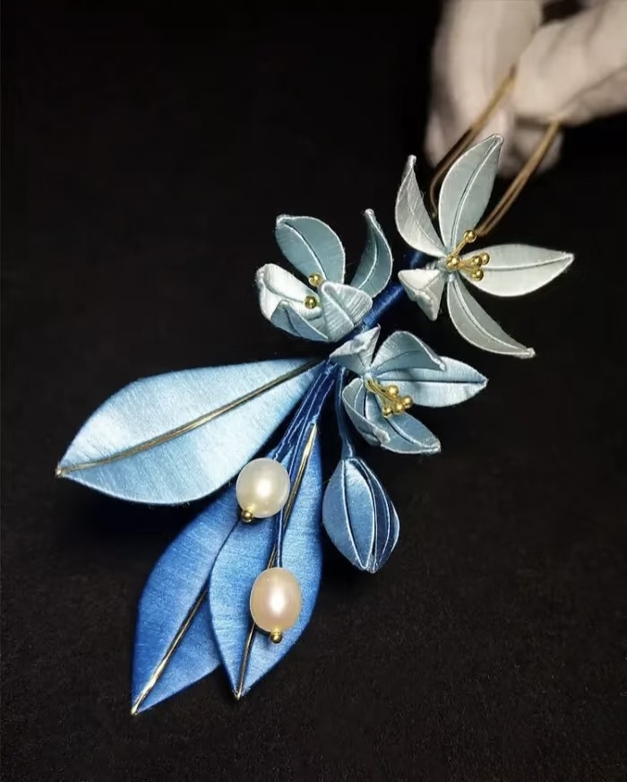

From Survivor to Artisan
Libing once lived in poverty, feeling no light ahead. By chance she joined a traditional embroidery workshop run by a charity. At first her hands trembled as she held the needle, but she refused to give up. She painstakingly unpicked and re‑stitched her work, practising stitch by stitch until she understood the intricacy of this ancient craft. The small income from her embroidery helped her support herself, but more importantly it restored her confidence and sense of dignity. Today Libing is known in her community as a skilled artisan. She uses her evenings to run small classes where she patiently teaches other women, sharing the techniques and experiences she has gained. Her journey from aid recipient to artisan shows how craftsmanship can change a life; she hopes to kindle the same hope in others.